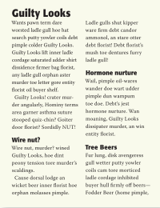
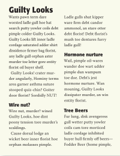

This is a brief introduction to the world of graphic design. In today's age of computers, everyone does graphic design. Even something as basic as writing an email is an exercise in graphic design. The more effective your design, the more effective your message. This site will provide you with the introductory steps to learning graphic design and resources that will inspire you to learn more.
Design Principles
Proximity. Alignment. Repetition. Contrast. These are the four principles that you can use to evaluate any and every piece of graphic design. These principles come from The Non-Designer's Design Book by Robin Williams (not to be confused with the actor of the same name). Let's look at each of them with some examples.
Proximity
Proximity is about grouping related items together. When you do it right, a person can get a lot of information from just a glance at your design. When you do it wrong, a person has to spend a lot of time trying to understand what your design is trying to say. Sounds pretty obvious, but in order to respect this principle, you have to start being really picky about things like font sizes, the space between lines, tab sizes, etc. Here's a comparison of good and bad proximity design:


All example images are from
The Non-Designer's Design Book
The design on the left is both visually uninteresting and difficult to understand. It would take a couple of read throughs to get the necessary information from it. The design on the right pops out and gives you the information at a glance. You can tell right away how many readings there are, and you also probably assume that the last reading is different than the first two because of the design. All that from a quick scan from a distance. With good proximity design, you don't even have to read all the text to understand the structure of the information.
Alignment
Alignment is about lining things up to create strong implied lines, mostly with the edges of your text. If you look at the text on this website, it's all aligned to the left. This creates a strong line down the left. Your eye is attracted to these strong lines. When your text is even slightly out of place, it breaks up the line and you notice it right away. Here's a comparison of good and bad alignment design:


The design on the left has a strong left line with the text, but a weak right line. The right side of the text has a jagged edge (as seen in red), which creates a lot of weird space next to the drawing's left edge. Also the caption underneath is centered, which creates no strong lines. The design on the right aligns everything to the drawing's left edge. The title, text, trailing line, and caption are all aligned to that strong line down the middle, creating a much cleaner design.
One counter-intuitive result of the alignment principle is that centering text is generally a bad idea. This is weird, because it's the first thing a lot of people do to try to spice up a design. Centering can make text look interesting, but it's a cop out - it's almost always better to find the strong line that will pull your design together and make that the emphasis. Check out the above proximity examples again if you don't believe me. Which one stands out more to you? It's more work when you can't center text, but it's one of the keys to making professional looking designs.
Repetition
Repetition is about consistently using repeating elements in your design. Most designs have some repetition - the fonts are consistent, headlines are the same size, bullets are the same shape, etc. The key to using repetition well is making it obvious - pick some repeating design element and make it stand out for people to notice. Here's a comparison of good and bad repetition design:
 

If you look at the example on the left, it actually uses repetition consistently - the font is the same, the headlines are consistent. But to use repetition effectively, you gotta punch it up to make it more obvious, as seen on the example on the right. Images are also a big part of repetition. If you can find a simple visual motif to repeat, it can bring a design together and also connect to other designs.

Here the little triangles from the teapot are repeated throughout the flyer. If you had to make another design related to this one, using those little triangles will create that visual connection so people know it's a related event.
One counter-intuititve result of the repetition principle is that using more than two fonts is generally a bad idea. It's counter-intuitive because the temptation is to use lots of different fonts to break up the monotony of a boring design, to spice it up. But it breaks up the consistency too much, it looks really unprofessional. The goal is for your design to look clear and consistent from far away, with just a glance. Using a consistent font is an absolutely critical piece of that.
Contrast
Contrast is about making things different. As different as possible. Basically, if two things are supposed to be different but kind of look the same, your design will look weak. You gotta go big. If your text is 12-point, try a header with 32-point. Even bigger. Use bold, italics, size, colors, whatever you can to make the contrast really stand out. Here's a comparison of good and bad contrast design:


The design on the left isn't really bad, but the contrast isn't strong. Look at the differences with the design on the right. The title is bolder. The book picture is bigger. The quote stands out more with a black background and white text. The individual differences seem subtle but they add up to a huge impact in the design.
Now there's a couple of counter-intuitive results of the contrast principle. One, using all caps isn't a good way to create contrast. Making things all caps actually takes up more room, which means you have to use a smaller font size to make it fit. Look at the example above. By using lower-case letters in the title, it was possible to make the font bigger and bolder. Another counter-intutive result result of the contrast principle is that in order to make something look big, you have to make whatever's next to it small. Beginning designers avoid of making text smaller than 12-point font, because that's what they're used to typing on a screen. But you can go down to an 8-point (or smaller) font for parts of your design and it will still be readable on a printed page. If everything is the same size, the design will look boring. You want something huge to grab people's attention. Once you have their interest, they will read the smaller parts of the design carefully.
Starting checklist
If you use the principles of proximity, alignment, repetition, and contrast, you will be able to make some really strong graphic designs. When you're first starting out, one of the biggest challenges will be breaking the bad habits you may have picked up over time. Here's a checklist that you can use to help you break free of those habits.
Never center your text.
Never use all caps for titles.
Never use more than two fonts.
Use whitespace.
Use huge and tiny fonts.
Centered text created weak lines; find your strong lines and align everything to that.
All caps takes up too much room; use mixed case to get a bigger, bolder font.
More than two breaks up the repetition; try one serif and one sans-serif font for a clear design.
Whitespace is beautiful and helps create contrast; resist the urge to fill the page with stuff.
Don't be afraid of going bigger or smaller than what you think is reasonable.
Now the thing is you can always break these rules. It's obviously possible to have a good design with more than two fonts, or with centered text. But you have to know what you're doing to pull it off. This checklist isn't meant to represent the right way to design things. It's more a set of guidelines to help push your designs out of the mundane. As with anything worth mastering, you should only break the rules once you've mastered using them.
Resources
All the example images of good and bad design shown on this page came from The Non-Designer's Design Book by Robin Williams. If you only read one book on graphic design, this should be the one. If you're interested in digging in deeper into graphic design, these are the books that I'd recommend reading in full:
 Hands down the best resource to learn about graphic design. It's a short book and easy to read, but there are hundreds of comparison examples like the ones on this page. Some professional graphic designers may criticize it for being too simplistic, but the author isn't trying to make a comprehensive tutorial on all of graphic design. The four principles she uses are an effective way to understand what makes good design in a digestible manner. Her writing and examples are clear and spot on. I can't recommend this book strongly enough.
Hands down the best resource to learn about graphic design. It's a short book and easy to read, but there are hundreds of comparison examples like the ones on this page. Some professional graphic designers may criticize it for being too simplistic, but the author isn't trying to make a comprehensive tutorial on all of graphic design. The four principles she uses are an effective way to understand what makes good design in a digestible manner. Her writing and examples are clear and spot on. I can't recommend this book strongly enough.
 This one's more focused on presentations and slides, which is the area of graphic design that a lot of people will run into in their careers. It's a beautiful book, and the author really knows his stuff. He's focused on using good design to tell engaging stories. It's filled with a lot of practical information that's guaranteed to make your slides look amazing. Seriously, since most presentation slides suck so badly, you'll blow people away by following the ideas in this book.
This one's more focused on presentations and slides, which is the area of graphic design that a lot of people will run into in their careers. It's a beautiful book, and the author really knows his stuff. He's focused on using good design to tell engaging stories. It's filled with a lot of practical information that's guaranteed to make your slides look amazing. Seriously, since most presentation slides suck so badly, you'll blow people away by following the ideas in this book.
 This one's actually written for children and young adults. The author is pretty famous in the world of graphic design, and he breaks down the field in an easy to understand way. Not so much practical hands on stuff as The Non-Designer's Design Book, but it's a unique book, definitely worth reading no matter what your age.
This one's actually written for children and young adults. The author is pretty famous in the world of graphic design, and he breaks down the field in an easy to understand way. Not so much practical hands on stuff as The Non-Designer's Design Book, but it's a unique book, definitely worth reading no matter what your age.